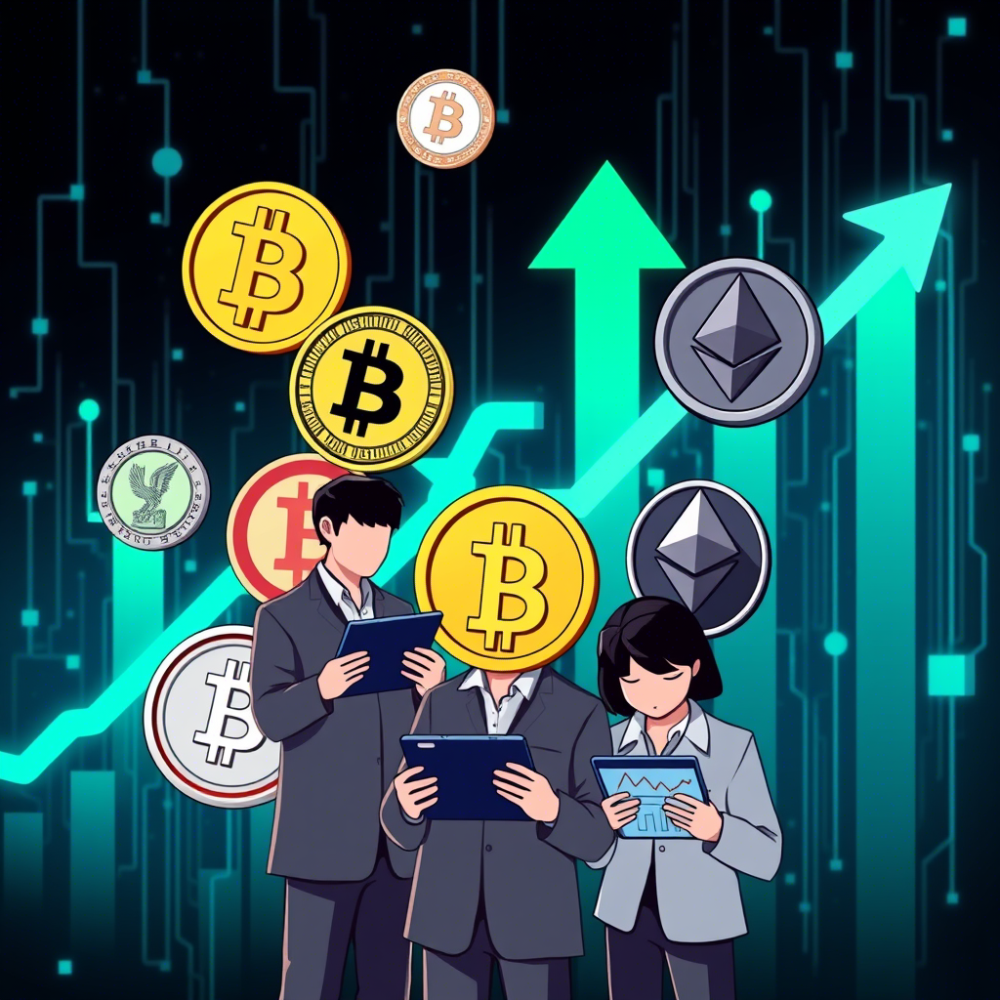
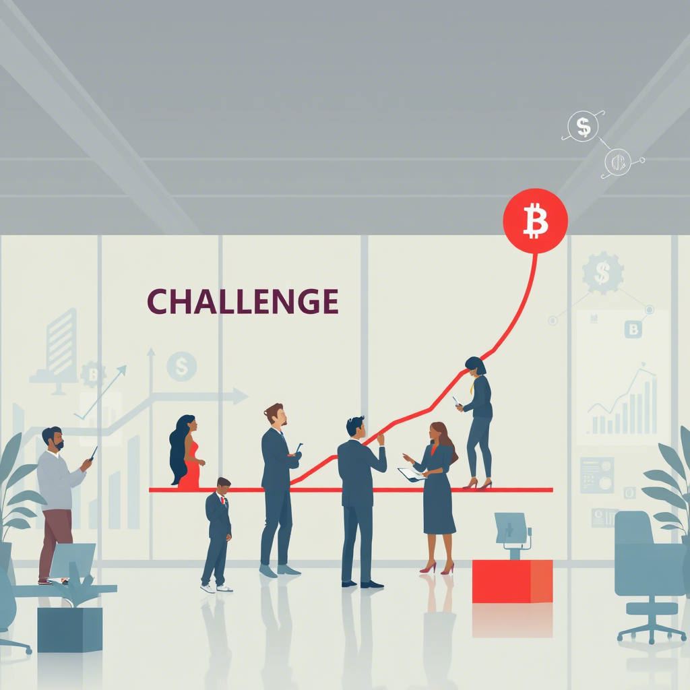
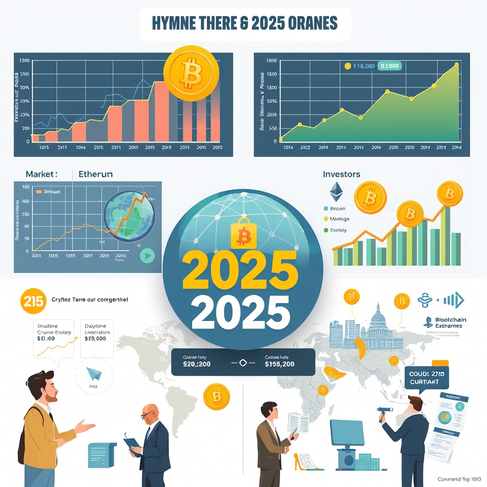

Les Cryptomonnaies Prometteuses pour 2025 : Guide Stratégique pour Investisseurs
Le monde des cryptomonnaies ne cesse d’évoluer, redéfinissant en permanence la manière dont nous envisageons la finance et les investissements. À l’approche de 2025, le secteur est mûr pour des innovations majeures, et identifier les projets les plus prometteurs est devenu essentiel pour tout investisseur souhaitant se positionner sur ce marché dynamique. Ce guide complet propose une analyse détaillée, depuis l’histoire et les bases technologiques jusqu’aux stratégies pratiques, pour vous aider à choisir intelligemment vos investissements.
I. Contexte et Évolution du Marché des Cryptomonnaies
1.1. Genèse et Évolution Historique
L’histoire des monnaies numériques débute véritablement avec la publication du white paper du Bitcoin par Satoshi Nakamoto en 2008. Ce document pionnier a posé les fondations d’un système décentralisé reposant sur la technologie blockchain, permettant la vérification des transactions sans autorité centrale. Depuis cette première innovation, des centaines de projets ont émergé, chacun apportant sa touche d’innovation et explorant de nouveaux usages.
Au fil des années, les cryptomonnaies se sont diversifiées, non seulement en termes de technologie mais aussi d’applications. Des monnaies servant de réserve de valeur aux plateformes de contrats intelligents, l’écosystème s’est enrichi, donnant naissance à un marché aux multiples facettes.
1.2. Adoption Institutionnelle et Réponse Réglementaire
L’intégration progressive des cryptomonnaies dans les institutions financières a permis de légitimer cet univers auprès d’un public plus large. Aujourd’hui, les grandes banques et les gestionnaires d’actifs se tournent vers ces technologies pour diversifier leurs portefeuilles. Parallèlement, les autorités de régulation cherchent à encadrer ces actifs afin d’assurer une meilleure protection des investisseurs, tout en laissant une marge de manœuvre suffisante pour favoriser l’innovation.
Les initiatives telles que la création de fonds spécialisés et l’examen des monnaies digitales émises par les banques centrales (CBDC) témoignent d’un intérêt grandissant et d’une volonté de moderniser le système financier mondial.
1.3. Innovations Technologiques : Le Moteur de l’Avenir
Des technologies comme les contrats intelligents, la finance décentralisée (DeFi), les tokens non fongibles (NFT) et les univers numériques immersifs (métavers) révolutionnent le secteur. Ces avancées permettent non seulement d’accroître l’efficacité des transactions, mais aussi d’ouvrir de nouvelles perspectives en matière d’applications décentralisées. L’interconnexion entre ces technologies renforce la valeur des projets et attire chaque jour davantage d’investisseurs.
II. Comprendre les Fondamentaux Avant d’Investir
2.1. La Technologie Blockchain et son Importance
Au cœur des cryptomonnaies se trouve la blockchain, une technologie de registre distribué qui assure la transparence et la sécurité des transactions. Chaque opération y est enregistrée de manière décentralisée, rendant toute manipulation ou falsification extrêmement difficile. Parmi les atouts principaux, on compte :
- Transparence totale : Chaque transaction est accessible publiquement et vérifiable.
- Sécurité accrue : La décentralisation renforce la résistance aux attaques.
- Traçabilité complète : L’historique des opérations est conservé de façon immuable.
2.2. Les Différents Types de Tokens
Les actifs numériques se déclinent en plusieurs catégories, chacune ayant son rôle spécifique :
- Monnaies de réserve : Comme le Bitcoin, ces actifs servent principalement de réserve de valeur ou de moyen d’échange.
- Plateformes de contrats intelligents : Ethereum en est l’exemple par excellence, permettant la création d’applications décentralisées (dApps).
- Tokens utilitaires : Utilisés pour accéder à des services spécifiques au sein d’un écosystème.
- Tokens de gouvernance : Offrant à leurs détenteurs un droit de vote dans l’évolution des projets.
2.3. La Finance Décentralisée (DeFi)
La DeFi révolutionne les services financiers en proposant des alternatives aux systèmes bancaires traditionnels. Grâce à des protocoles automatisés sur blockchain, il est désormais possible d’emprunter, de prêter ou d’échanger des actifs sans intermédiaires centralisés. Ce secteur en pleine expansion attire l’attention pour sa capacité à démocratiser l’accès aux services financiers.
2.4. Critères d’Évaluation Essentiels
Avant de s’engager, il est crucial d’analyser plusieurs indicateurs fondamentaux :
- Compétence de l’équipe : Une équipe expérimentée est un atout majeur pour la pérennité d’un projet.
- Qualité technologique : La scalabilité, la sécurité et l’innovation sont des points déterminants.
- Dynamique communautaire : Une communauté active et engagée renforce la crédibilité et la viabilité d’un projet.
- Partenariats stratégiques : Des alliances solides avec d’autres acteurs du secteur augmentent les chances de succès.
- Modèle économique et tokenomique : La répartition des tokens et la logique d’incitation doivent être équilibrées pour assurer une croissance durable.
2.5. Approche Technique et Gestion des Risques
L’analyse technique, fondée sur l’étude des graphiques et des tendances de prix, constitue un outil précieux pour anticiper les fluctuations du marché. En complément des analyses fondamentales, cette approche permet de :
- Identifier des tendances de marché.
- Déterminer des niveaux de support et de résistance.
- Utiliser des indicateurs comme le RSI ou le MACD pour détecter les signaux d’achat ou de vente.
- Mettre en place des mécanismes de gestion des risques (stop-loss, diversification) afin de protéger le capital investi.
III. Zoom sur les Cryptomonnaies à Surveiller pour 2025

3.1. Bitcoin : Le Pionnier et Référence Incontournable
Malgré l’émergence de nombreux projets, le Bitcoin reste le leader incontesté du marché. Avec son offre limitée à 21 millions d’unités et son rôle de « valeur refuge », il continue d’attirer les investisseurs institutionnels et particuliers. Les innovations telles que le Lightning Network viennent renforcer son utilité et son attractivité.
3.2. Ethereum : L’Usine à d’Applications Décentralisées
Ethereum a su se distinguer en créant un environnement propice au développement de dApps et de contrats intelligents. La transition vers le modèle de proof-of-stake (PoS) promet d’améliorer considérablement l’efficacité et la scalabilité du réseau. Cette évolution, associée à un écosystème DeFi florissant, positionne Ethereum comme un acteur incontournable pour 2025.
3.3. Binance Coin (BNB) : La Force de l’Écosystème Binance
En tant que token natif de la plateforme Binance, l’un des plus grands échanges de cryptomonnaies au monde, le Binance Coin bénéficie d’une utilité multiple : réduction des frais, participation aux lancements de nouveaux tokens, etc. La croissance continue de Binance renforce la demande pour BNB, en faisant un choix stratégique pour diversifier un portefeuille.
3.4. Cardano (ADA) : L’Innovation par la Recherche et la Rigueur Scientifique
Cardano se démarque par son approche basée sur la recherche académique et des revues par des pairs. Son architecture en couches, qui dissocie le règlement des transactions de l’exécution des contrats intelligents, permet une meilleure sécurité et évolutivité. Ce projet, soutenu par une communauté internationale, est souvent perçu comme une alternative sérieuse aux plateformes plus établies.
3.5. Solana (SOL) : Une Scalabilité et une Vitesse Impressionnantes
Solana attire l’attention grâce à sa capacité à traiter des milliers de transactions par seconde, grâce à des mécanismes innovants combinant preuve d’enjeu et preuve d’histoire. Sa rapidité, conjuguée à une faible latence, en fait une plateforme de choix pour les projets nécessitant une haute performance, notamment dans le domaine des jeux et de la DeFi.
3.6. Polkadot (DOT) : L’Interconnexion au Cœur de l’Innovation Blockchain
Polkadot se distingue par sa capacité à interconnecter plusieurs blockchains différentes, facilitant ainsi l’échange de données et la coopération entre projets. Son architecture modulaire permet aux développeurs d’ajouter de nouvelles fonctionnalités tout en maintenant une sécurité renforcée. Ce projet est en passe de devenir le pont entre diverses plateformes blockchain.
3.7. Avalanche (AVAX) : Rapidité et Efficacité Énergétique
Avalanche est reconnu pour offrir des transactions quasi instantanées et des coûts réduits. En misant sur un protocole optimisé pour la rapidité, Avalanche séduit de nombreux développeurs et investisseurs. La plateforme se positionne également comme une alternative plus respectueuse de l’environnement, grâce à une consommation énergétique optimisée.
3.8. Autres Projets Émergents
Au-delà des géants du secteur, plusieurs autres cryptomonnaies présentent un fort potentiel pour 2025 :
- Terra (LUNA) propose des stablecoins algorithmiques innovants qui cherchent à concilier stabilité et décentralisation.
- Algorand (ALGO) se positionne comme une plateforme ultra-performante et sécurisée pour le développement d’applications.
- Fantom (FTM), quant à lui, offre une infrastructure rapide et réactive pour répondre aux exigences des applications financières décentralisées.
- Cosmos (ATOM) mise sur l’interopérabilité entre blockchains, créant ainsi un écosystème fluide et interconnecté.
IV. Critères et Approches pour Évaluer un Projet
4.1. Examen Approfondi des Fondamentaux
Avant de prendre position sur une cryptomonnaie, il est essentiel d’étudier plusieurs aspects clés :
- L’équipe dirigeante : Son expérience, sa vision et la crédibilité des développeurs.
- La technologie : La robustesse, la sécurité et la capacité d’évolution de la plateforme.
- L’engagement communautaire : Une communauté active est souvent un indicateur de pérennité.
- Les partenariats stratégiques : Des alliances solides avec d’autres acteurs renforcent la légitimité d’un projet.
- La structure du token : Une tokenomique bien pensée, équilibrant l’offre et la demande, est indispensable pour assurer une valorisation durable.
4.2. L’Analyse Technique pour Affiner le Timing
Outre les fondamentaux, l’analyse des graphiques et des indicateurs de marché permet de mieux comprendre la dynamique des prix :
- Observation des tendances : Identifier les cycles de hausse et de baisse pour déterminer les moments opportuns d’entrée ou de sortie.
- Étude des volumes : Des volumes élevés peuvent signaler un intérêt croissant pour un actif.
- Utilisation d’outils comme le RSI et le MACD : Pour détecter des signaux d’achat ou de vente en fonction du momentum du marché.
- Gestion proactive du risque : L’emploi de stop-loss et la diversification restent des pratiques essentielles pour limiter l’exposition aux fluctuations imprévues.
4.3. Enjeux Réglementaires et Contextes Géopolitiques
Les décisions d’investissement dans les cryptomonnaies doivent également prendre en compte l’environnement externe :
- Évolutions réglementaires : Les législations évoluent d’un pays à l’autre, et un cadre légal clair peut booster la confiance des investisseurs.
- Impact géopolitique : En période d’instabilité, les actifs décentralisés sont souvent perçus comme une alternative aux systèmes financiers traditionnels.
- Tensions internationales : Les politiques monétaires et les relations entre pays influencent l’attrait des cryptomonnaies en tant que refuge contre l’incertitude économique.
V. Stratégies Pratiques pour Investir en 2025

5.1. Construire un Portefeuille Diversifié
Pour se prémunir contre la volatilité inhérente au marché des cryptomonnaies, il est crucial de diversifier ses investissements :
- Répartir les investissements entre les leaders du marché et les projets émergents.
- Adapter la répartition en fonction du risque et du potentiel de croissance de chaque actif.
- Revoir régulièrement la composition du portefeuille pour s’ajuster aux évolutions du marché.
5.2. Investir de Manière Régulière : La Méthode DCA
Le Dollar Cost Averaging (DCA) consiste à investir une somme fixe à intervalles réguliers, indépendamment du prix de l’actif. Cette stratégie permet de :
- Lisser l’impact des fluctuations du marché,
- Éviter de miser sur un seul moment de la journée,
- Instaurer une discipline d’investissement régulière et moins émotionnelle.
5.3. Surveillance et Gestion Active des Risques
Il est fondamental d’élaborer une stratégie de gestion des risques pour éviter des pertes trop importantes :
- Définir des seuils de perte (stop-loss) afin de protéger le capital investi.
- Planifier des prises de bénéfices régulières pour sécuriser les gains en cas de retournement de tendance.
- Adapter sa stratégie en fonction de l’évolution du marché et des nouvelles informations réglementaires ou technologiques.
5.4. Outils et Plateformes pour un Suivi Efficace
De nombreux outils facilitent l’analyse et la gestion de vos investissements :
- Plateformes d’échange reconnues telles que Binance, Coinbase ou Kraken,
- Applications de suivi de portefeuille pour monitorer la performance de chaque actif,
- Sites d’analyse de données comme CoinMarketCap ou TradingView pour disposer d’informations en temps réel.
VI. Défis et Opportunités pour l’Avenir

6.1. La Volatilité et l’Inévitabilité des Cycles de Marché
Le marché des cryptomonnaies est marqué par des fluctuations importantes. Comprendre ces cycles est essentiel pour :
- Identifier les bulles spéculatives et les périodes de correction,
- Prendre des positions stratégiques en fonction des phases haussières et baissières,
- Utiliser les fluctuations à son avantage tout en minimisant les risques.
6.2. La Sécurité et la Résilience face aux Cybermenaces
À mesure que la valeur des actifs numériques augmente, le risque d’attaques informatiques se fait sentir :
- Renforcer les mesures de sécurité sur les plateformes d’échange et de stockage,
- Choisir des projets audités et transparents pour éviter les arnaques ou les « rug pulls »,
- Adopter des pratiques de cybersécurité personnelles pour protéger ses données et ses investissements.
6.3. Réglementations et Climat Géopolitique
Les décisions gouvernementales et les tensions internationales influencent fortement le marché :
- Une harmonisation progressive des régulations peut offrir un cadre rassurant aux investisseurs,
- Les politiques monétaires internationales peuvent inciter à se tourner vers des actifs décentralisés en cas d’instabilité économique,
- Les accords internationaux favorisant l’innovation blockchain offrent des perspectives intéressantes.
6.4. Convergence Technologique et Écologique
Les synergies entre blockchain, intelligence artificielle, IoT et connectivité 5G annoncent de nouvelles perspectives :
- Des solutions de proof-of-stake et autres mécanismes énergétiquement efficaces permettent de réduire l’empreinte carbone,
- L’intégration des technologies intelligentes dans les protocoles blockchain ouvre la voie à des applications encore plus performantes,
- La collaboration avec des acteurs du secteur énergétique renforce l’aspect durable des projets innovants.
VII. Perspectives Régionales et Impacts Mondiaux
7.1. Une Adoption Hétérogène selon les Régions
L’implantation des cryptomonnaies varie d’un continent à l’autre :
- En Amérique du Nord et en Europe, l’investissement institutionnel et les cadres réglementaires renforcent la stabilité du marché,
- En Asie, l’innovation et l’adoption massive par les populations offrent un terrain fertile pour le développement de nouvelles applications,
- Dans les économies émergentes, l’accès facilité aux services financiers via la blockchain représente une réelle opportunité d’inclusion.
7.2. Influences Géopolitiques et Enjeux Économiques
Les dynamiques internationales jouent un rôle déterminant dans la valorisation des actifs numériques :
- Les tensions politiques et commerciales incitent souvent les investisseurs à se tourner vers des actifs décentralisés pour diversifier leurs risques,
- La réaction des banques centrales face aux politiques monétaires traditionnelles peut renforcer l’attrait des cryptomonnaies comme valeur refuge,
- Les coopérations internationales visant à standardiser les régulations contribuent à la croissance globale du secteur.
VIII. Conseils et Bonnes Pratiques pour Investir en 2025
8.1. Définir Vos Objectifs Personnels
Avant de se lancer, il est impératif de clarifier vos attentes :
- Quel est votre horizon temporel ? À long terme ou pour profiter des fluctuations à court terme ?
- Quel niveau de risque êtes-vous prêt à endosser ? Adaptez vos investissements à votre tolérance personnelle.
- Quels rendements ciblez-vous ? Établissez des objectifs réalistes et ajustez vos positions en fonction de l’évolution du marché.
8.2. S’informer et Se Former en Permanence
La formation continue est la clé pour naviguer dans un environnement en constante mutation :
- Suivez des sources d’information fiables (blogs spécialisés, rapports d’experts, analyses de marché),
- Participez à des conférences et webinaires pour échanger avec d’autres passionnés et experts du secteur,
- Mettez à jour vos connaissances techniques concernant les dernières innovations blockchain et les nouvelles stratégies d’investissement.
8.3. Mettre en Œuvre des Outils de Gestion Efficaces
Un suivi rigoureux et l’utilisation d’outils performants sont essentiels pour optimiser votre stratégie :
- Utilisez des plateformes de trading sécurisées pour gérer vos opérations,
- Adoptez des applications de suivi de portefeuille afin de monitorer vos performances en temps réel,
- Exploitez les données fournies par des outils d’analyse technique pour ajuster vos stratégies d’entrée et de sortie du marché.
8.4. Construire une Stratégie de Sortie Réfléchie
Savoir quand liquider une position est aussi important que de savoir quand investir :
- Définissez des objectifs de prise de bénéfices et des seuils de perte pour protéger votre capital,
- Réévaluez régulièrement votre stratégie en fonction des évolutions du marché et de l’actualité économique,
- Soyez prêt à ajuster vos positions pour profiter des opportunités tout en minimisant les risques.
IX. Scénarios Prospectifs pour le Marché des Cryptomonnaies en 2025

9.1. Scénario Optimiste
Dans une vision optimiste, plusieurs facteurs convergeraient pour stimuler une croissance soutenue :
- Adoption généralisée par les institutions financières et le grand public,
- Innovations technologiques majeures améliorant la scalabilité et la sécurité des réseaux,
- Régulations claires et favorables stimulant l’investissement tout en protégeant les acteurs du marché.
9.2. Scénario Pessimiste
À l’inverse, un contexte moins favorable pourrait ralentir le développement du secteur :
- Réglementations trop restrictives dans certaines régions,
- Volatilité extrême pouvant inciter à une baisse généralisée de l’appétit pour le risque,
- Incidents de sécurité ou défaillances technologiques sapant la confiance des investisseurs.
9.3. Scénario Intermédiaire
La trajectoire la plus probable se situerait entre ces deux extrêmes :
- Une croissance modérée et progressive, ponctuée de phases de correction,
- Une régulation évolutive cherchant à équilibrer protection des investisseurs et encouragement à l’innovation,
- Une diversification des cas d’usage permettant aux cryptomonnaies de s’intégrer progressivement à l’économie réelle.
X. Réflexions et Recommandations pour les Investisseurs
10.1. Adopter une Vision à Long Terme
L’investissement dans les cryptomonnaies ne doit pas se limiter à des gains rapides ; il s’agit d’un pari sur l’avenir de la finance numérique. Adopter une perspective à long terme permet de :
- Surmonter les phases de volatilité,
- Profiter de l’évolution progressive des projets innovants,
- S’aligner sur la transformation structurelle du système financier.
10.2. Rester Curieux et Flexible
Le secteur évolue rapidement. Se tenir informé des dernières innovations, des tendances technologiques et des mises à jour réglementaires est indispensable pour ajuster ses stratégies en temps réel. Une attitude proactive face à l’apprentissage et à l’adaptation constitue l’un des meilleurs atouts pour réussir dans ce domaine.
10.3. Privilégier la Diversification et la Gestion Précautionneuse
La diversification est essentielle pour limiter les risques dans un environnement aussi fluctuant. Combinez investissements dans des actifs établis et des projets émergents tout en adoptant des techniques de gestion de risques (stop-loss, couverture) pour protéger votre capital.
XI. Perspectives Globales et Impacts Sociaux
11.1. Une Adoption Mondiale aux Dynamiques Variables
L’acceptation des cryptomonnaies n’est pas uniforme dans le monde :
- En Occident, l’intégration est souvent guidée par des cadres réglementaires clairs et une forte présence institutionnelle.
- En Asie, la rapidité d’adoption et l’innovation technologique se conjuguent pour offrir un terrain propice à de nouvelles applications.
- Dans les économies émergentes, la blockchain offre une opportunité d’inclusion financière en fournissant des services alternatifs aux systèmes bancaires traditionnels.
11.2. Les Retombées Économiques et Sociales
Au-delà de l’aspect purement financier, l’essor des cryptomonnaies impacte de nombreux secteurs :
- Inclusion financière : Offrir des services bancaires à des populations traditionnellement exclues.
- Transparence et traçabilité : Améliorer la gestion des chaînes d’approvisionnement et des transactions commerciales.
- Redéfinition de la propriété digitale : Avec l’essor des NFT, la notion de propriété s’étend désormais au domaine numérique.
XII. Témoignages et Points de Vue d’Experts
12.1. Perspectives des Professionnels du Secteur
Les spécialistes du domaine s’accordent sur le fait que la blockchain représente une révolution structurante pour l’économie mondiale. Ils mettent en avant l’importance de :
- Combiner technologie de pointe et adoption concrète par le marché,
- Favoriser des projets alliant innovation technique et cas d’usage réels,
- Développer des mécanismes de gouvernance décentralisée pour impliquer activement les utilisateurs.
12.2. Expériences d’Investisseurs Avisés
De nombreux investisseurs ayant suivi une approche disciplinée témoignent de leur succès :
- Les institutionnels privilégient la diversification et des investissements progressifs pour atténuer la volatilité.
- Les entrepreneurs et passionnés misent sur leur connaissance approfondie du secteur et sur une veille constante pour identifier les opportunités.
- Les jeunes investisseurs, souvent plus audacieux, combinent diverses stratégies telles que le staking et le yield farming pour maximiser leurs gains tout en restant prudents face aux risques.
XIII. Ressources et Outils pour un Suivi Permanent
13.1. Sources d’Information et Plateformes de Veille
Pour rester informé dans un secteur en perpétuelle évolution, il est essentiel de consulter régulièrement :
- Des portails d’actualités spécialisés comme CoinDesk, CoinTelegraph, ou Decrypt,
- Des rapports d’analystes et études de marché disponibles sur des sites spécialisés,
- Des communautés en ligne et forums où se partagent conseils et expériences.
13.2. Outils d’Analyse Technique et de Gestion de Portefeuille
Les plateformes telles que TradingView, CoinMarketCap, ou encore diverses applications de suivi de portefeuille offrent une vision en temps réel de la performance des actifs et facilitent la prise de décision.
XIV. Scénarios Prospectifs et Prévisions pour 2025

14.1. Un Avenir Prometteur dans un Contexte Innovant
Les innovations technologiques devraient continuer à propulser le marché des cryptomonnaies vers de nouveaux sommets :
- Les avancées en matière de scalabilité et de sécurité pourraient favoriser une adoption plus large,
- L’intégration de la DeFi dans le système financier traditionnel apporterait plus de stabilité,
- Les initiatives écologiques dans le développement des protocoles pourraient également attirer des investisseurs sensibles aux enjeux environnementaux.
14.2. Les Risques Inhérents et la Nécessité d’une Adaptation Constante
Toutefois, il est crucial de rester conscient des obstacles potentiels :
- Une volatilité persistante et des corrections de marché fréquentes demeurent des risques majeurs,
- Les évolutions réglementaires pourraient à la fois créer des opportunités et imposer de nouvelles contraintes,
- Les cybermenaces nécessitent une vigilance accrue quant à la sécurité des plateformes et des actifs.
XV. Conclusion et Synthèse
15.1. L’Investissement en Cryptomonnaies : Un Pari sur l’Avenir
Investir dans les cryptomonnaies en 2025 représente une opportunité unique de participer à une transformation radicale du paysage financier. La convergence de l’innovation technologique, l’évolution des cadres réglementaires et l’adoption croissante par un public diversifié offrent des perspectives de croissance intéressantes pour ceux qui sauront combiner stratégie, connaissance et prudence.
15.2. Conseils Ultimes pour une Approche Réussie
Pour tirer le meilleur parti de cette révolution numérique, il est recommandé de :
- Se former en continu et de rester à l’affût des dernières innovations,
- Diversifier son portefeuille pour répartir les risques entre actifs établis et projets émergents,
- Utiliser des outils d’analyse technique et de suivi de portefeuille afin de prendre des décisions éclairées,
- Adopter une vision à long terme et ne pas se laisser influencer par les fluctuations à court terme.
En adoptant ces pratiques et en restant curieux face aux évolutions constantes du marché, chaque investisseur pourra s’inscrire durablement dans la transformation du système financier et profiter des opportunités offertes par les cryptomonnaies.
Remerciements et Ressources Complémentaires
Nous espérons que ce guide personnalisé vous fournira une base solide pour élaborer votre stratégie d’investissement en cryptomonnaies à l’horizon 2025. Pour approfondir vos connaissances, n’hésitez pas à consulter les ressources suivantes :
- Portails spécialisés et rapports d’analystes
- Communautés d’investisseurs en ligne et forums spécialisés
- Webinaires et formations en ligne sur la blockchain et la DeFi